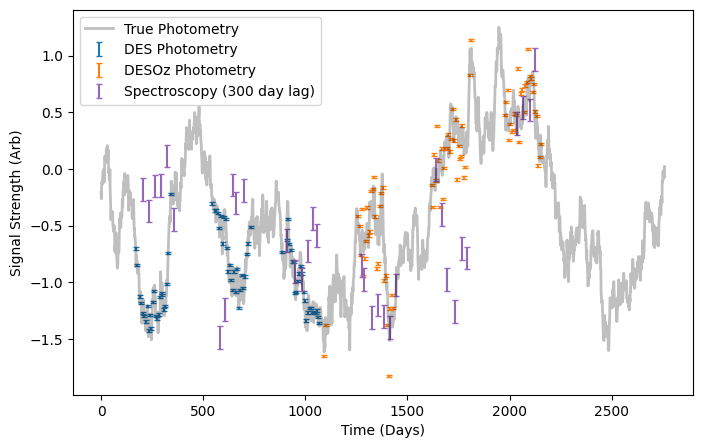
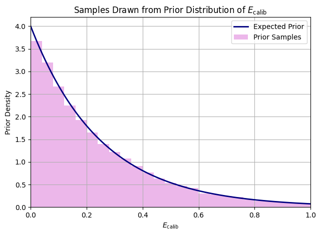
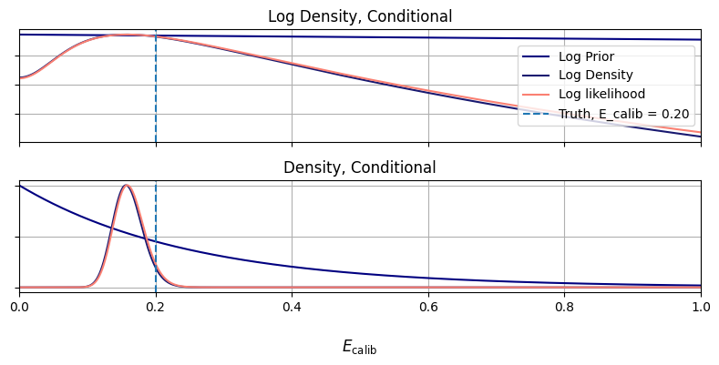
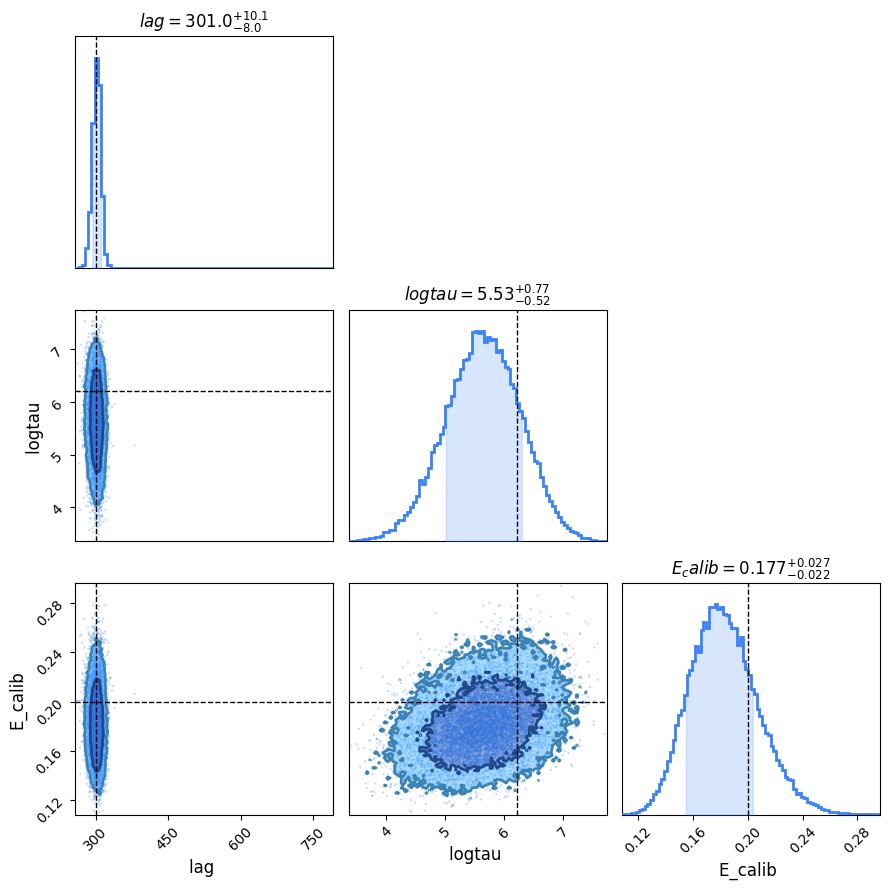

Custom stats_model Example
Using LITMUS but finding that the existing stats models just aren't what you're after: Good news, LITMUS's modular design means you can write your own stats model or extend an existing one as easily as you like. In this example we'll show an example of adding PyRoa-style uncertainty calibration from an imaginary survey with two photometric telescopes. In this example we work in the format of a notebook, but in actuality you'd likely write your extension modules in a .py file
from litmus.models import _default_config, stats_model, quickprior
import litmus.gp_working as gpw
from litmus import *
from litmus._utils import dict_extend
import numpyro
import numpyro.distributions as dist
import numpy as np
import matplotlib.pyplot as plt
import jax.numpy as jnp
An NVIDIA GPU may be present on this machine, but a CUDA-enabled jaxlib is not installed. Falling back to cpu.
An Imaginary Survey
First up, we need to actually generate our fake data. Let's imagine a ficticious (but reasonable) scenario like this: 1. Like OzDES, we have multi-year parallel observations of OzDES spectroscopy and DES-like phometry data for the first three years 2. Oops! Something went wrong and we lost the last three years of photometry! 3. Good news! A second survey (Let's call it DESOz) happened to observe the same target for the last three years! 4. Oh no! DESOZ has some unaccounted source of error $E_\mathrm{calib}$ that isn't accounted for in its measurement uncertainties!
This example may be a little unrealisitc, but it has the vague shape of a practical application and so we'll proceed anyway. First up, let's simulate the imaginary data, per usual equipped with all the true underlying values.
First, use the mocks module to get some OzDES/DES-like data:
seed = 0
mock_underlying = litmus.mocks.mock(seed=seed, lag=300, tau=500, maxtime=360 * 6, E=[0.01, 0.1])
phot_lc_1, spec_lc = mock_underlying.lc_1, mock_underlying.lc_2
Now, we'll trim the photometry lightcurve, phot_lc_1, to the first three years and generate a second mock with a slightly higher measurement uncertainty, which we'll then trim to the second three years. We'll then bring the "recorded" uncertainty back down. This means that the phot_lc_2 now has its measurement uncertainty under-estimated, which we can see by how the corresponding points scatter about the true underlying lightcurve:
phot_lc_1 = phot_lc_1.trimmed_copy(0.0, 360 * 3)
E_calib_true = 0.2
mock_2 = litmus.mocks.mock(seed=seed, lag=300, tau=500, maxtime=360 * 6,
E=[np.sqrt(0.01 ** 2 + E_calib_true ** 2), 0.1])
phot_lc_2 = mock_2.lc_1.trimmed_copy(360 * 3, 360 * 6)
phot_lc_2.E = np.sqrt(phot_lc_2.E ** 2 - E_calib_true ** 2)
phot_lc = phot_lc_1.concatenate(phot_lc_2)
#-----------
fig, ax = plt.subplots(figsize=(8, 5))
phot_lc_1.plot(axis=ax, c='tab:blue', capsize=2, show=False, label="DES Photometry")
phot_lc_2.plot(axis=ax, c='tab:orange', capsize=2, show=False, label="DESOz Photometry")
spec_lc.plot(axis=ax, c='tab:purple', capsize=2, show=False, label="Spectroscopy (300 day lag)")
plt.plot(mock_underlying.lc.T, mock_underlying.lc.Y, alpha=0.25, lw=2, c='k', label="True Photometry")
plt.legend()
plt.ylabel("Signal Strength (Arb)")
plt.xlabel("Time (Days)")
plt.show()

The Stats
Before we code a statistical model, we need to know what that model looks like exactly. In this case, it's a relatively simple change to the normal GP_simple model, but with one addition: we need E_calib to be some unknown factor near unity by which we correct the DESOz measurement errors. As a Bayesian model we need some sort of prior, and given we now that E_calib is close to zero an exponential distribution makes sense
\begin{equation} \pi(E_\mathrm{calib}) \propto \exp(lambda\timesE_\mathrm{calib}) \end{equation}
Then we'd up-scale our uncertainties by this amount, remembering that we add errors in quadrature instead of linearly: \begin{equation} E_i = \sqrt{E_i^0 + E_\mathrm{calib}} \;\; \forall \;\; i \in {i_\mathrm{DESOz}} \end{equation} In NumPyro this looks something like:
E_calib = numpyro.sample('E_calib',numpyro.distributions.Exponential(0, lam))
E = jnp.sqrt(E**2 + jnp.where(survey=="DESOz", E_calib, 0.0)**2)
...Typical GP sampling stuf...
Most of LITMUS's models by default use uniform distributions, or at least distributions with hard boundaries, so we're playing a bit fast and loose with convention here. Still, for an ad-hoc example we can be a little shotgun with convention.
We need know we need to keep track of which survey generated each measurement in each lightcurve, so let's staple those onto the lightcurve objects now:
phot_lc.survey = [*["DES"] * sum(phot_lc.T < 360 * 3), *["DESOz"] * sum(phot_lc.T >= 360 * 3)]
spec_lc.survey = ["OzDES"] * spec_lc.N
Building the stats_model Model
The minimum amount of things you need to build a stats_model in litmus is:
1. A way of turning lightcurves into data (.lc_to_data()),
2. A prior (.prior()), with default ranges (._default_prior_ranges), and
3. A model likelihood function (.model_function(data))
Our model, lets call it GP_simple_Ecalib is an extension to the GP_simple model, so it inherits most of the bells and whistles out of the box. We only really need to specify the bits that change. Of the functions here, most are copy-pasted from the original GP_simple source-code with only a few extra lines added, but you can see how the moving parts work.
class GP_simple_Ecalib(litmus.models.GP_simple):
def __init__(self, prior_ranges=None, **kwargs):
self._default_prior_ranges = {
'E_calib': [0, 1.0],
}
super().__init__(prior_ranges=prior_ranges, **kwargs)
# ----------------------------------
def lc_to_data(self, lc_1: lightcurve, lc_2: lightcurve) -> dict:
T = jnp.array([*lc_1.T, *lc_2.T])
Y = jnp.array([*lc_1.Y, *lc_2.Y])
E = jnp.array([*lc_1.E, *lc_2.E])
bands = jnp.array([*np.zeros(lc_1.N), *np.ones(lc_2.N)]).astype(int)
survey = np.array([*lc_1.survey, *lc_2.survey]) # <---------- New!
survey = jnp.where(survey == "DESOz", 1, 0)
I = T.argsort()
T, Y, E, bands = T[I], Y[I], E[I], bands[I]
data = {'T': T,
'Y': Y,
'E': E,
'bands': bands,
"survey": survey # <---------- New!
}
return data
def prior(self):
lag, logtau, logamp, rel_amp, mean, rel_mean = super().prior()
_, lam = self.prior_ranges['E_calib'] # <---------- New!
E_calib = numpyro.sample('E_calib', dist.Exponential(lam)) # <---------- New!
return lag, logtau, logamp, rel_amp, mean, rel_mean, E_calib
def model_function(self, data):
lag, logtau, logamp, rel_amp, mean, rel_mean, E_calib = self.prior()
T, Y, E, bands, survey = [data[key] for key in ['T', 'Y', 'E', 'bands', "survey"]]
E = jnp.sqrt(E ** 2 + jnp.where(survey == 1, E_calib, 1.0) ** 2) # <---- The magic line!
# Conversions to gp-friendly form
amp, tau = jnp.exp(logamp), jnp.exp(logtau)
diag = jnp.square(E)
delays = jnp.array([0, lag])
amps = jnp.array([amp, rel_amp * amp])
means = jnp.array([mean, mean + rel_mean])
T_delayed = T - delays[bands]
I = T_delayed.argsort()
# Build and sample GP
gp = gpw.build_gp(T_delayed[I], Y[I], diag[I], bands[I], tau, amps, means, basekernel=self.basekernel)
numpyro.sample("Y", gp.numpyro_dist(), obs=Y[I])
Now let's create an instance of this model and test to see if it actually works. First, we'll generate a bunch of samples to make sure it understands its prior properly:
lam = 4.0
model_instance = GP_simple_Ecalib(prior_ranges={"E_calib":[0, lam]}, verbose=False)
prior_samples = model_instance.prior_sample(1024 * 32)
#--------
X = prior_samples['E_calib'].sort()
plt.plot(X, lam*np.exp(-X*lam), c= 'navy', lw=2, label = "Expected Prior")
plt.hist(prior_samples['E_calib'], bins=64, density=True, color = 'orchid', alpha = 0.5, label = "Prior Samples")
plt.title("Samples Drawn from Prior Distribution of $E_\mathrm{calib}$")
plt.xlabel("$E_\mathrm{calib}$"), plt.ylabel("Prior Density")
plt.legend(), plt.tight_layout()
plt.grid()
plt.xlim(0,1.0)
plt.show()

Let's also make sure that our statistical model has enough constraining power to actually measure $E_\mathrm{calib}$, and confirm that .model_function() and .lc_to_data() are working properly. Because we chose a vague prior the posterior density is heavily likelihood dominated and, thankfully, near-gaussian which means we can safely use the hessian_scan.
# Convert lightcurves to data with .lc_to_data()
data = model_instance.lc_to_data(phot_lc, spec_lc)
# Create a bunch of test samples with all parameters except E_calib fixed at truth
E_calib_test = np.linspace(0.0, 1, 1024)
test_params = dict_extend(mock_underlying.params(), {'E_calib': E_calib_test})
# Calculate prior, likelihood and log density
log_prior = model_instance.log_prior(test_params, data)
log_density = model_instance.log_density(test_params, data)
log_likelihood = log_density - log_prior
#--------------------------------
# Plot!
f, [a1, a2] = plt.subplots(2, 1, figsize=(8, 4), sharex=True)
a1.set_yscale('log')
for a in [a1, a2]:
a.plot(test_params['E_calib'], np.exp(log_prior - log_prior.max()), label="Log Prior", c = 'navy')
a.plot(test_params['E_calib'], np.exp(log_density - log_density.max()), label="Log Density", c= 'midnightblue')
a.plot(test_params['E_calib'], np.exp(log_likelihood - log_likelihood.max()), label="Log likelihood", c = 'salmon')
a.axvline(E_calib_true, ls='--', label='Truth, E_calib = %.2f' % E_calib_true)
a.set_yticklabels([])
a.grid()
if a is a1: a.legend(loc='center right')
plt.xlim(E_calib_test.min(), E_calib_test.max())
a1.set_title("Log Density, Conditional")
a2.set_title("Density, Conditional")
f.supxlabel("$E_\mathrm{calib}$")
f.tight_layout()
plt.show()

Enough validation and testing. Let's see how it performs with actual fitting via the hessian_scan. By default, everything should perform nice and smoothly without any alteration. Let's see how we've done:
my_fitter = litmus.fitting_methods.hessian_scan(model_instance, Nlags=64, verbose=False)
my_fitter.fit(phot_lc, spec_lc)
Now slotting this into a plotter and firing off the contours, we find that we've succeeded in constraining the calibration uncertainty! Notice that $E_\mathrm{calib}$ and $\ln \vert \tau \vert$ (E_calib and logtau) are slightly correlated. If we hadn't included this error calibration, we would have ended up with a model that:
1. Drastically under-estimated the timescale of variation to try and wiggle through the extra noise
2. Had a markedly lower model evidence, obscuring the strength of our lag recovery
lt = LITMUS(my_fitter)
lt.plot_parameters(show=False, truth=mock_underlying.params() | {'E_calib': E_calib_true},
params=["lag", "logtau", "E_calib"])
plt.show()
Warning! LITMUS object built on pre-run fitting_procedure. May have unexpected behaviour.

This is a pretty simple example of setting up a custom stats_model, but by and large even more complicated applications will follow these processes. Some things not covered here are:
1. Updating the .find_seed() function to make common sense a-priori guesses for any new parameters you introduce. By default
GP_simple or other models will blindly sample the prior until they get a decent hit for these
2. Updating ._gen_lightcurves() to properly predict the underlying lightcurves. This is very similar to updating model_function but taking in an argument Tpred for time and returning a covariance matrix. See the source code for GP_simple and its null hypothesis variants for examples
3. If you decide to use a non-uniform prior for lag, you'll need to make sure it still has hard boundaries as defined in prior_ranges and will need to update .uncon_grad_lag() so that fitting methods understand how to transit between the constrained and unconstrained domains. See GP_simple_normalprior for an example.